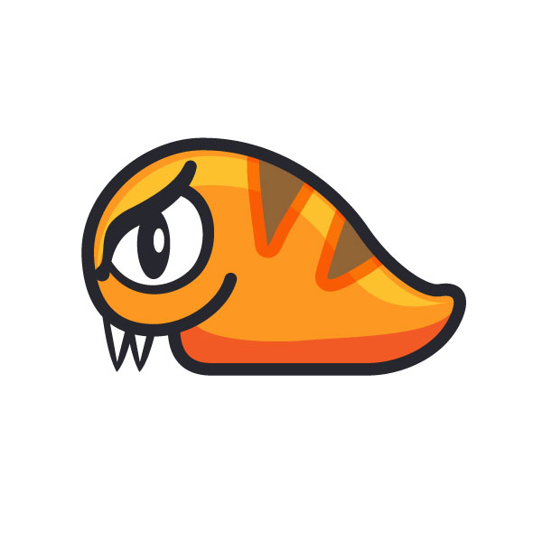

<!--
  Generated template for the StatsPage page.

  See http://ionicframework.com/docs/components/#navigation for more info on
  Ionic pages and navigation.
-->
<ion-header>

  <ion-navbar>
    <ion-title>Monster Stats</ion-title>
  </ion-navbar>

</ion-header>

<ion-content padding>
  <div class="screen">
  <h1 style="padding-left:10px; padding-top:5px; text-align: center"> Monster Stats </h1>
  <ion-list>
      <ion-item>
        <!-- <ion-thumbnail item-start>
          
        </ion-thumbnail>  -->
        <h2>Trait</h2>
        <p>Aggresive</p>
        <!-- <button ion-button clear item-end>View</button> -->
      </ion-item>
      <ion-item>
          <!-- <ion-thumbnail item-start>
            
          </ion-thumbnail> -->
          <h2>Health</h2>
          <p>Extremely healthy</p>
          <!-- <button ion-button clear item-end>View</button> -->
        </ion-item>
        <ion-item>
          <!-- <ion-thumbnail item-start>
            
          </ion-thumbnail> -->
          <h2>Weight</h2>
          <p>20kg</p>
          <!-- <button ion-button clear item-end>View</button> -->
      </ion-item>
      <ion-item>
          <!-- <ion-thumbnail item-start>
            
          </ion-thumbnail> -->
          <h2>Strength</h2>
          <p>200cp</p>
          <!-- <button ion-button clear item-end>View</button> -->
      </ion-item>
    </ion-list>
  </div>
</ion-content>
